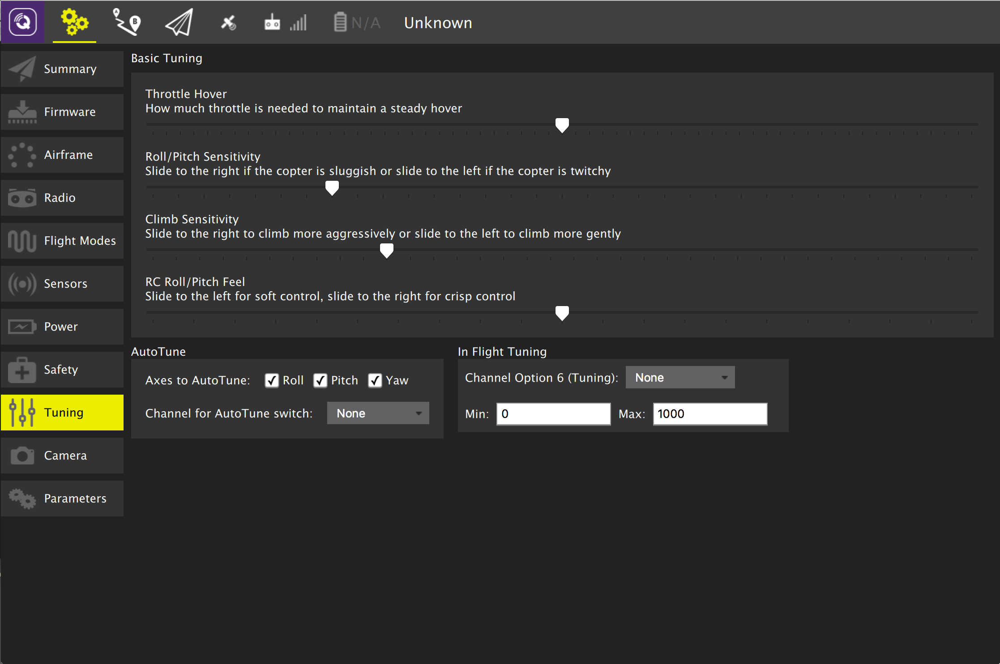
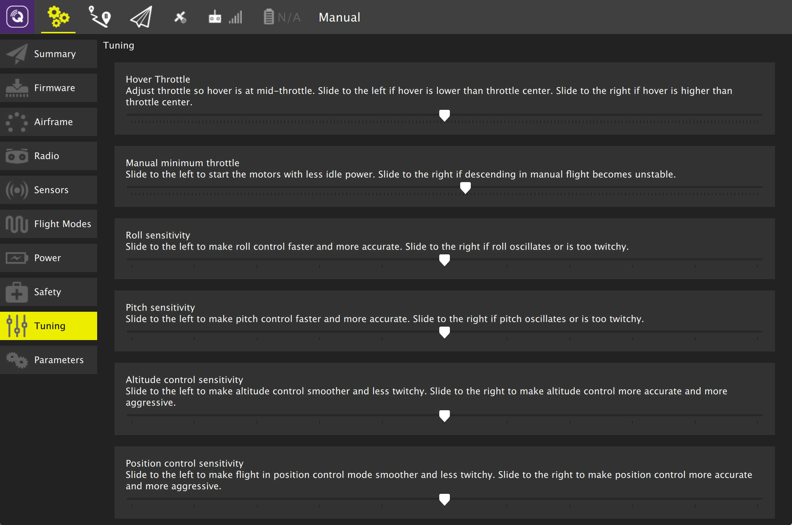

Tuning Setup
This page allows you to configure settings on your vehicle which control basic flight characteristics. The details of the page differ slightly if you are using PX4 Pro firmware or ArduPilot firmware.
Basic Tuning
A set of Basic Tuning sliders are suppored for both firmwares. They allow you to adjust the specified flight characteristic by moving the slider to the left or right.
ArduCopter Tuning

AutoTune
AutoTune is used to automatically tune the rate parameters in order to provide the highest response without significant overshoot.
Performing an AutoTune:
- Select which axes you would like to tune. Tuning all axes at once can take a significant amount of time which may cause you to run out of battery. In order to prevent this you can select to tune only one axis at a time.
- Assign AutoTune to one of your transmitter switches. Ensure that switch is in low position before taking off.
- Take off and put the copter into AltHold.
- Turn on AutoTune with your transmitter switch.
- The copter will twitch around the specified axes for a few minutes.
- When AutoTune completes the copter will change back to the original settings.
- Move the AutoTune switch back to low position and then back to high to test the new settings.
- Move the AutoTune switch to low to test previous settings.
- To save new settings, land and disarm while AutoTune switch is in high position.
Note:
- Since AutoTune is done in AltHold your copter must already have a tuning which is minimally flyable in AltHold. You can cancel AutoTune at any time by moving the AutoTune switch back to low position.
- You can reposition the copter using your transmitter at any time during AutoTune.
In Flight Tuning
This is an advanced option which allows you to tune a flight control parameter using one of your transmitter dial channels. Select the control option from the dropdown and specify the min/max for the values to assign to the dial.
PX4 Copter Tuning
